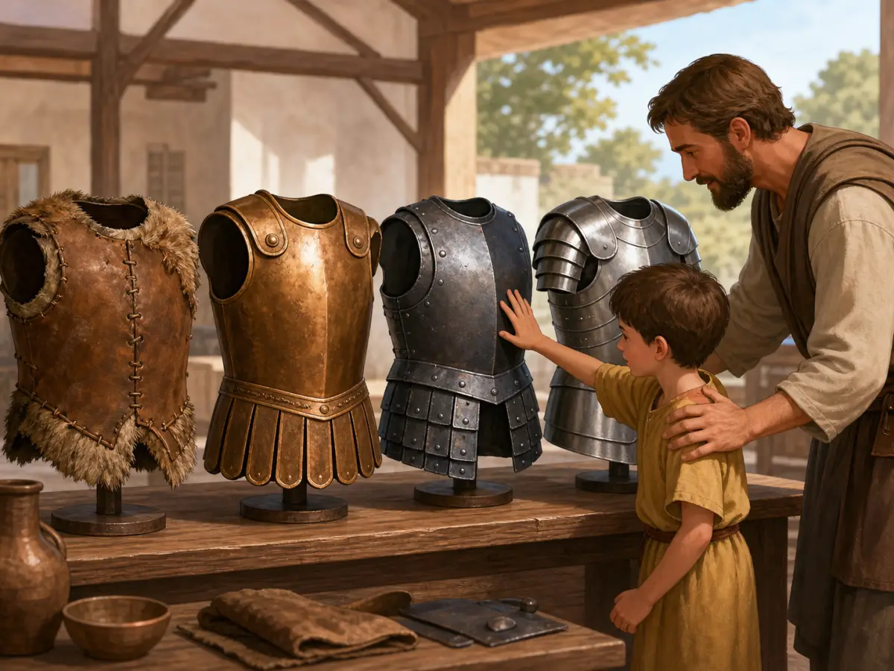

各朝代的兵服：从皮甲到铁甲
From Leather to Iron: Armor Through the Dynasties
Page 1
皮甲 - 最早的防线
Animal-Skin Armor: The First Layer of Protection

Early armor was not always iron. It began with animal skin, then slowly became harder.
商朝士兵上战场，身上常见的重要防护是一层处理过的皮甲。把皮切成合适形状，用绳子串起来绑在身上 - 当然谈不上刀枪不入，但总比什么都不穿强得多。后来又有人往里面加骨片、青铜片，防护慢慢升级。
When Shang dynasty soldiers went to battle, many wore armor made from treated animal skin, also called hide.
People cut the hide into the right shapes. Then they tied the pieces together with cords and wore them over the body. Of course, this armor could not stop every blade or arrow. But it was much better than wearing nothing.
Later, people added pieces of bone or bronze. Little by little, armor became stronger.
Page 2
秦朝 - 兵马俑脸上的铠甲
Qin Armor in the Terracotta Army

The Terracotta Army shows us what Qin armor looked like more than 2,000 years ago.
西安兵马俑坑道里，成千上万个陶土士兵穿着定格了两千多年的战甲。普通士兵穿的是皮甲 - 长方形的皮片编缀而成，刚好护住胸腹。军官的甲更精致 - 皮片更小更密，肩部和胸口加厚，领子镶了一层彩色的嵌边。
这些甲不是铁做的 - 秦朝的主力铠甲仍然是皮甲。但秦甲的设计已经很成熟了：所有的甲片向外翻叠 - 对方的刀砍过来顺着甲片上滑，砍不到肉。
In the Terracotta Army pits in Xi'an, thousands of clay soldiers still wear armor that has been frozen in time for more than 2,000 years.
Ordinary soldiers wore leather or hide armor made from small rectangular pieces tied together. It protected the chest and belly. Officers wore fancier armor. Their pieces were smaller and set closer together. The shoulders and chest had thicker protection. Some collars even had colored trim.
This armor was not iron. The Qin army still used a lot of hide armor. But the design was already smart. The armor pieces overlapped in layers. If an enemy blade hit, it could slide along the pieces instead of cutting straight into the body.
Page 3
汉朝 - 铁甲登场
The Han Dynasty: Iron Armor Arrives

Small iron plates overlapped like fish scales to protect the body.
汉朝以后，工匠越来越多地用铁片代替皮片。他们把许多小铁板编成甲衣，一片压一片，像鱼鳞一样叠起来。这样的甲当然很重，穿上去走路慢、转身也不轻松，但防护确实强得多。
汉朝还出现了铁头盔 - 早期的头盔只盖住头顶，汉朝的铁盔沿往下延伸护住了耳朵和脸颊。盔顶通常会插一簇红色的羽毛 - 不是为了好看，是让远处的指挥官在漫山遍野的混战里一眼认出自己人属于哪个阵列。
After the Han dynasty began, craftspeople used more and more iron plates instead of hide pieces.
They tied many small iron plates into coats of armor. One plate overlapped another, like fish scales. This armor was heavy. It made walking slower and turning harder. But it protected the body much better.
Iron helmets also became important. Earlier helmets often covered only the top of the head. Han iron helmets could reach down to protect the ears and cheeks.
Some helmets had a bunch of red feathers on top. That was not just for decoration. In the confusion of battle, a commander far away needed to spot his own soldiers quickly.
Page 4
从青铜到钢 - 两千年的变化
From Bronze to Steel: Armor Keeps Changing

The materials changed, but the question stayed the same: how do you stay alive?
唐朝和宋朝以后，盔甲工艺越来越复杂。材料从皮到青铜、从青铜到铁、从铁到钢。青铜比皮硬但脆，大力砸下去会碎。铁比铜坚固而且不容易碎。后来又出现了钢 - 比铁更硬也更有弹性。
但材料越硬，往往也越贵。钢极难炼，成本比铁高很多，只有少数高级将领用得起。古代打仗消耗太大，好东西永远不够每个人一起用。
所以古代铠甲一直在变。它变得更硬，也常常变得更重。可不管材料怎么换，工匠一直在解决的都是同一个问题：怎么让人上了战场，能多挡下一箭、多活一会儿。
By the Tang and Song periods, armor making had become much more complicated.
Materials changed from hide to bronze, from bronze to iron, and from iron to steel. Bronze was harder than hide, but it could crack. Iron was stronger than bronze and did not break as easily. Later came steel, which could be harder and springier than iron.
But stronger materials often cost more. Steel was hard to make and much more expensive than iron. Only some high-ranking commanders could use the best armor. Ancient wars needed huge amounts of equipment, and there was never enough of the finest gear for everyone.
So armor kept changing. It became harder, and often heavier too. But the question stayed the same: how can this soldier block one more arrow and stay alive a little longer?
小结
Summary
从皮到青铜、从青铜到铁，再到更成熟的钢甲，古代铠甲一直在变。它不仅是防护衣，也是工匠、材料和战场需要一起推动出来的结果。
From hide to bronze, from bronze to iron, and then to better steel, ancient armor kept changing. It was not just protective clothing. It was shaped by craftspeople, materials, and the hard needs of battle.